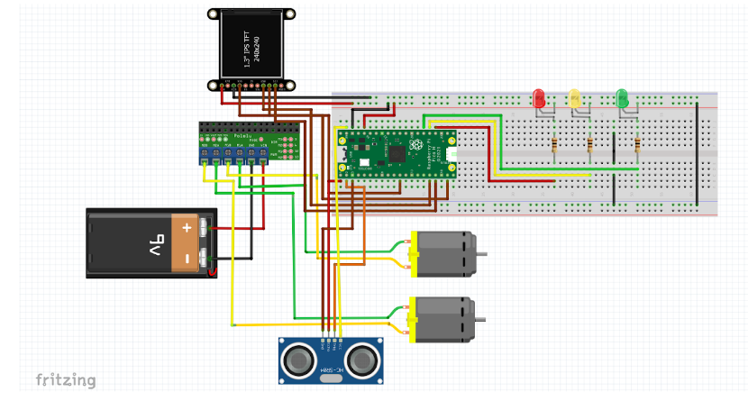
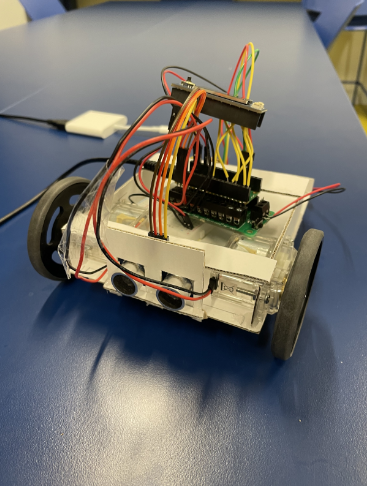

Our project aims to develop a compact and remote-controlled vehicle designed to navigate and clean small spaces while also serving as a tool for locating misplaced items with its camera feature.
To achieve this, we have incorporated a user-friendly website that offers two primary modes of control: keyboard inputs and a selection of movement blocks. By utilizing these movement blocks, users can construct predetermined paths for the vehicle to traverse, enabling the device to be repeatedly employed for specific locations.
Through the website, users can seamlessly control the vehicle's direction and access the camera feature to aid in locating lost objects. The website also provides options for storing and retrieving user preferences and data.
We hope that our effort will be helpful to those who want to streamline their cleaning procedures and spend less time looking for lost objects in confined locations. This technology has a wide range of potential uses, from domestic to professional settings like offices or labs.
Our team is devoted to building a dependable, efficient, and user-friendly device that will serve as a valuable tool in boosting productivity and simplifying activities.
 Our team is devoted to building a dependable, efficient, and user-friendly device that will serve as a valuable tool in boosting productivity and simplifying activities. We are passionate about leveraging technology to solve real-world problems and improve people's lives.
If you have any questions or feedback about our project, we would love to hear from you!